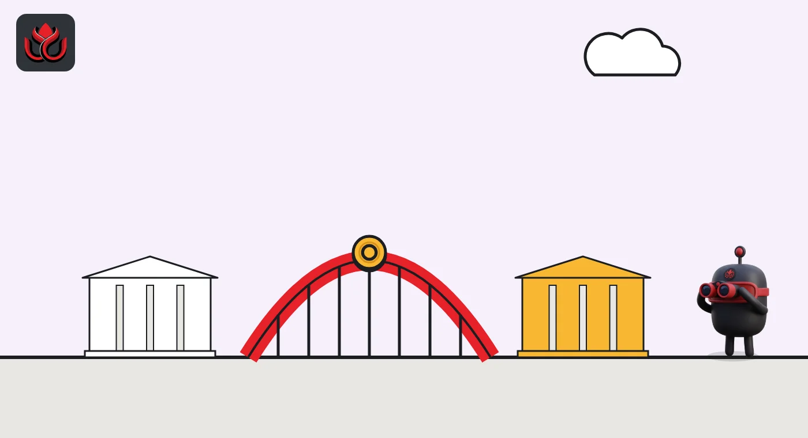

GL1 Org launches with HSBC and JPMorgan on its member list. What will it build?
Global financial institutions have formed the Global Layer One Organisation to push shared rules for tokenized markets. Its site lists HSBC, JPMorgan, MUFG, Forge and Standard Chartered as members. The project began at Singapore's central bank in 2024.
Key points
- GL1's official site announced on November 4, 2026, that global financial institutions have established the Global Layer One Organisation.
- The site lists five industry members: JPMorgan, MUFG, Forge, HSBC and Standard Chartered, plus the Bank of England, the Banque de France and the Monetary Authority of Singapore (MAS) under policymakers.
- GL1 wants open, interoperable shared ledgers for cross-border deals in tokenized assets that still meet regulators' rules.
What happened
A group of the world's biggest financial firms has turned a two-year-old research project into its own organization. The GL1 website carries a November 4, 2026, headline saying global financial institutions "Establish Global Layer One Organisation."
GL1 stands for Global Layer One. A "layer one" is a base blockchain network, the bottom layer that records transactions. The idea behind GL1 is not one bank's private chain, but shared ledger infrastructure that many regulated firms can use together.
The site lists five participating industry members: JPMorgan, MUFG, Forge, HSBC and Standard Chartered. Under policymakers it shows the logos of the Bank of England, the Banque de France and the Monetary Authority of Singapore (MAS), Singapore's central bank and financial regulator. The homepage does not say which of these firms signed the founding papers.
What GL1 is trying to build
GL1 describes itself as a collaboration between the public and private sectors. Its stated goal is to foster "open, interoperable, shared ledger infrastructures" that can carry cross-border financial transactions while meeting what regulators expect.
In plain terms: today, a tokenized bond on one bank's network often cannot move to another bank's network. Tokenized means a real asset, like a bond or a fund share, recorded as a digital token on a blockchain. GL1 wants common standards so these networks can connect, and so compliance checks (who is allowed to hold what) are built into the system.

From a MAS paper to an organization
GL1 is not new. MAS published the Global Layer 1 whitepaper on June 27, 2024. It explored a general-purpose shared ledger that regulated institutions would build for the financial industry, following common technical standards and applicable rules.
The GL1 site lists two more releases dated June 22, 2026: an update on an ecosystem of institutional-grade ledger infrastructures and a white paper on programmable compliance.
On October 9, 2026, MAS Managing Director Chia Der Jiun called GL1 "an industry collaboration platform" in a keynote at INSEAD. He said GL1 has released a Market Infrastructure Toolkit, which helps judge digital financial infrastructure against international standards, and has developed a Programmable Compliance Toolkit. He added that a growing number of major ledger networks are adopting these standards.
Timeline
MAS publishes the Global Layer 1 (GL1) whitepaper
GL1 posts an ecosystem update and a Programmable Compliance white paper
MAS chief Chia Der Jiun describes GL1's two toolkits in a keynote
GL1 announces the Global Layer One Organisation
What we do not know yet
The GL1 homepage does not name leaders, give a budget, or say where the new organization is registered. It also does not say whether it will run its own network or only write standards for others. We will update this story when the full release text is available on a primary source.
LC Insight analysis
This section is our reading of the facts above, not a statement of fact.
- We think the move from a white paper to a standing organization matters more than any single pilot. Banks tend to commit staff and money to bodies with their own governance, not to research projects.
- The likely result is that tokenized bonds and funds from different banks get a common rulebook for moving across networks. That would help the tokenization trade grow beyond isolated, one-bank platforms.
- Public blockchains are not shut out by this, but GL1 puts regulated firms and central banks in charge of the standards. Crypto-native networks that want bank flows may need to meet them.
What's next
- The full GL1 Org release: leadership, legal home and membership terms
- Which ledger networks adopt the Market Infrastructure and Programmable Compliance toolkits
- Whether more banks or central banks join the five listed industry members
Disclaimer. This article is based on public information and the sources listed below as of the update time shown. It is for information only and is not investment, legal or tax advice. Figures may change as companies and authorities publish new data.
Sources
- GL1, official website, "Establish Global Layer One Organisation" (November 4, 2026; read November 6, 2026, 12:50 a.m. ET)
- Monetary Authority of Singapore, Global Layer 1 (GL1) Whitepaper (June 27, 2024)
- Monetary Authority of Singapore, keynote by Chia Der Jiun, "Building Trusted Foundations for Digital Finance" (October 9, 2026)